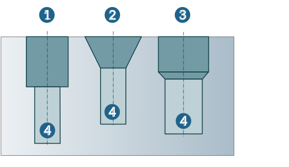
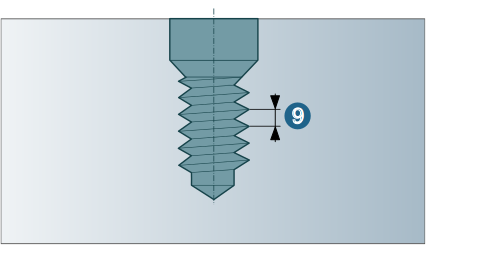

Sink Hole
Geometric data from the Sink Hole feature can be used for 2D, 3D and drilling cycles in the job definition.
A distinction is made between the following three basic types: Counterbore (1), Countersink (2) and Drill (3). Core hole (4).
|  |
Depending on the basic type you choose, you can define the following parameters for the Sink Hole.
Orientation, Group and Position:
Chamfer: Select this option (if chamfer is required). Depth (1): Enter value or derive from the CAD system.
Core hole diameter (2), Core hole depth (3): Enter the value or derive it from the CAD system.
Bottom type: Through, Flat, Tip (see figure: basic types of simple holes)
Offset bottom: only bottom type through hole. Enter value or derive it from the CAD system.
Tip angle: Only bottom type tip.
ISO fit: Yes, if ISO fit required. No, if ISO fit not required. Fit value: Define tolerance value according to norm (DIN ISO 286-2). Fit length: Enter the value or derive it from the CAD system.
Thread: Designation.
Diameter (4), Length (5): Enter value or derive from the CAD system. Pitch (9): Enter value or derive from the CAD system.
 |
|  |
Preferred machining direction: Select machining direction: bottom to top. Top to bottom
Sink type: Counterbore, Countersink, Drill (see figure: Basic types of sink holes) with following sink parameters:
Diameter (6), Depth (7): Enter values or derive from the CAD system.
Tip angle (8): Drill only. Enter value or derive it from the CAD system.
 |
Chamfer: Yes, if chamfer is required. No, if chamfer not required. Depth (10): Enter value or derive from the CAD system. Angle (11): Only countersink: Enter values or derive from the CAD system.
 |
|
Attributes can be defined for the associative parameters of the Sink Hole feature. |